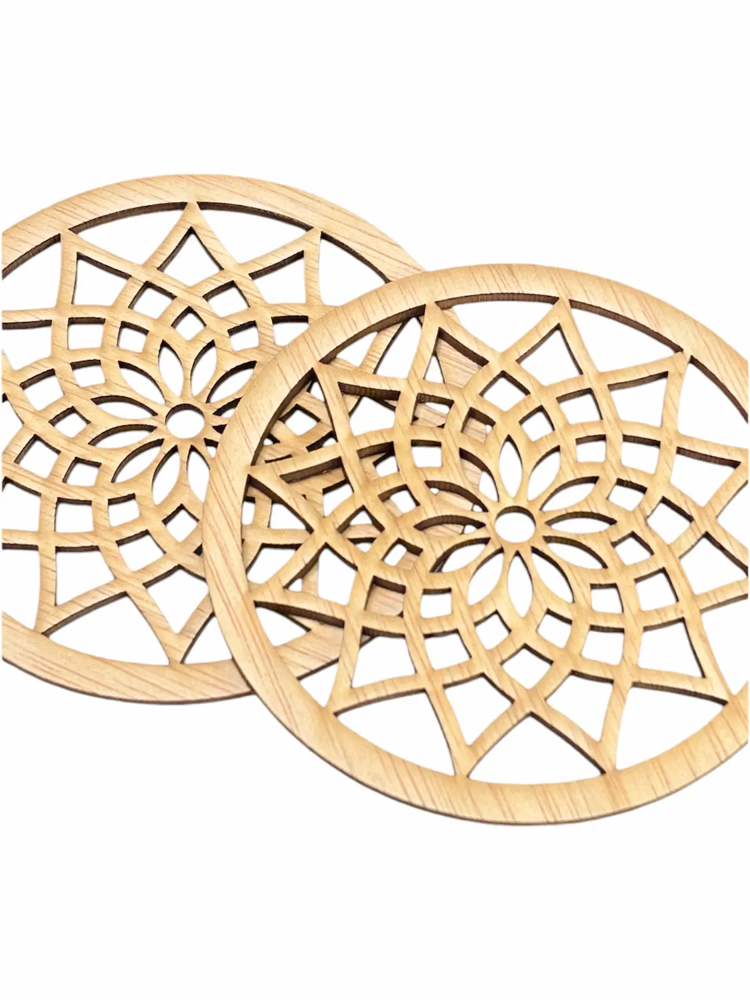
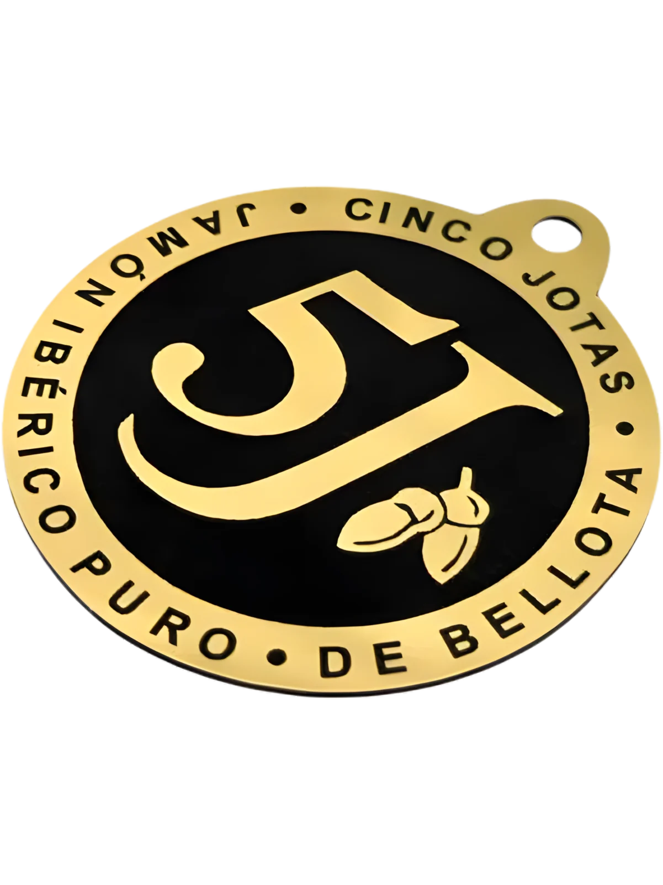
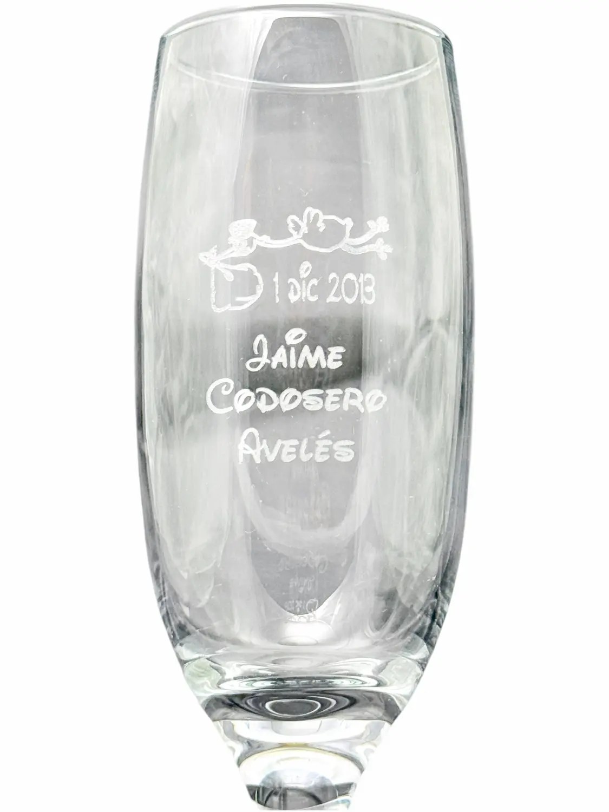
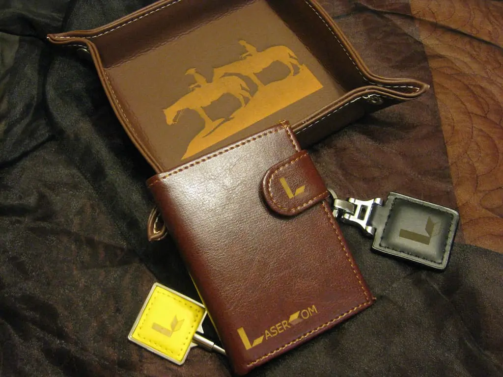
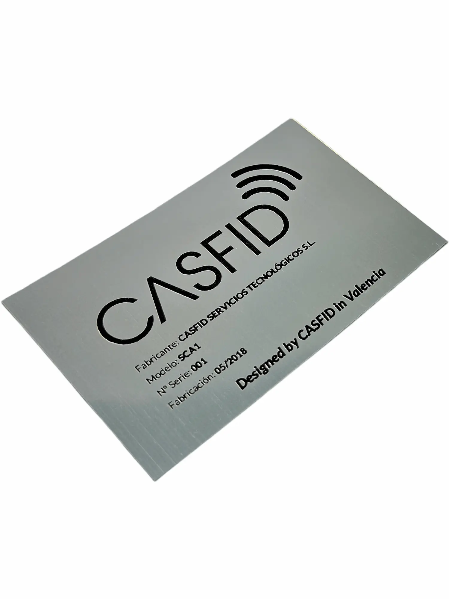
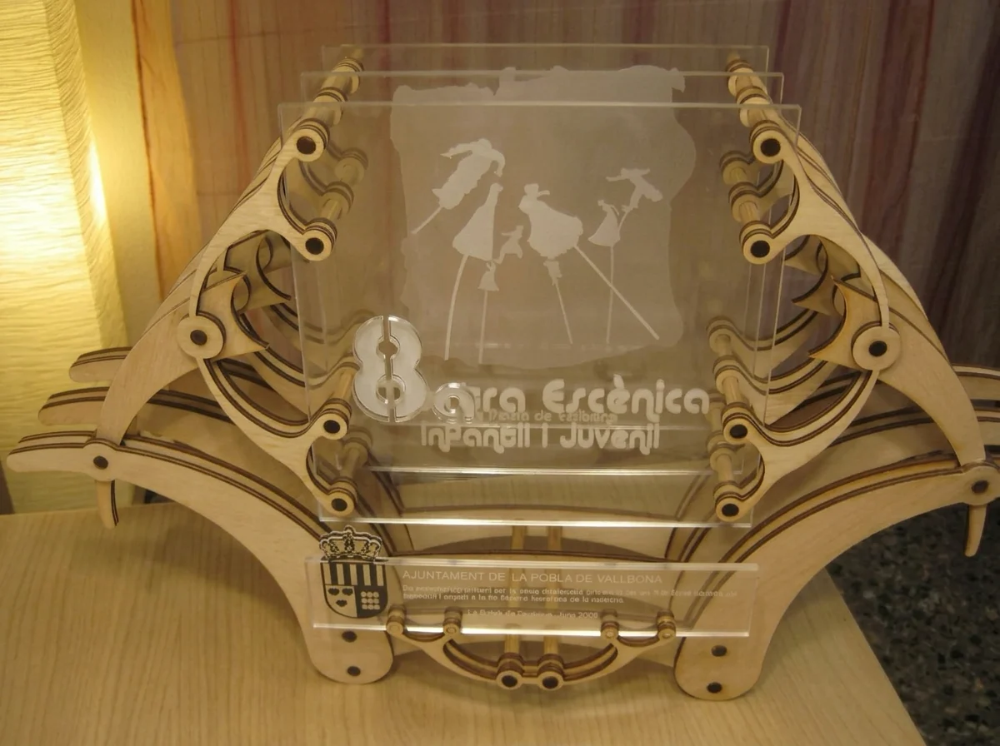
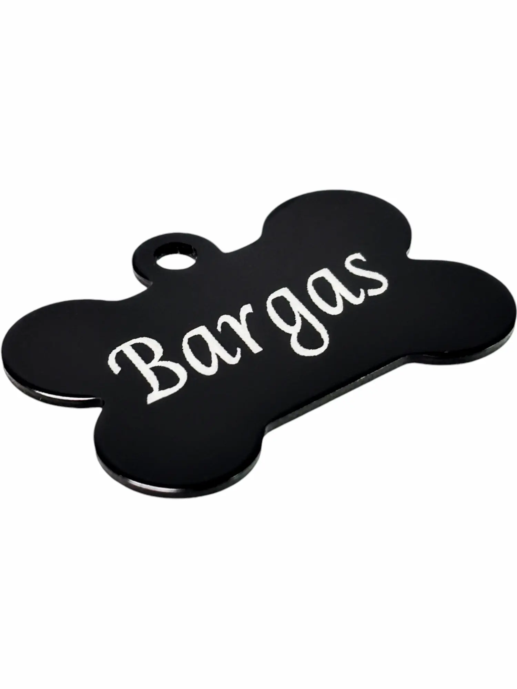
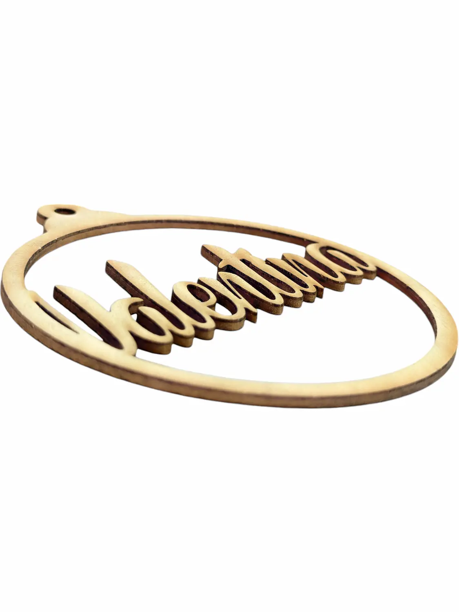

M-01Abanico caladoMadera · corte

M-02Posavasos caladosMadera · corte

T-01Chapa para jamónMetal · marcado

C-01Copa grabadaCristal · grabado
M-03Escudo de fallaMadera · corte

P-01Escudo en pielPiel · grabado

T-02Tarjeta metálicaMetal · grabado

C-02Maqueta a escalaMetacrilato · corte

T-03Chapa de mascotaMetal · grabado

M-04Peana en relieveMadera · grabado

M-05Nombre cortadoMadera · corte